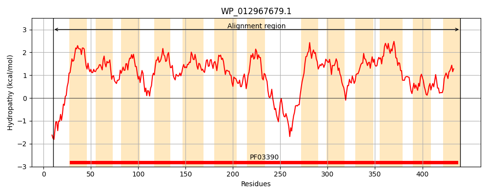
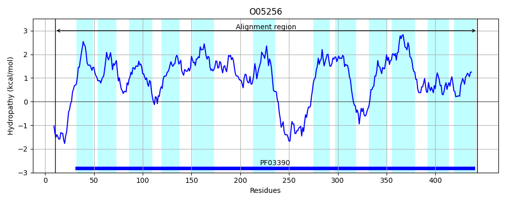
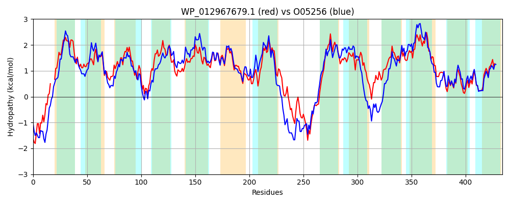

Hit Accession: O05256
Hit TCID: 2.A.24.2.3
Hit Description: gnl|BL_ORD_ID|6727 gnl|TC-DB|O05256|2.A.24.2.3 HYPOTHETICAL 47.8 kDa PROTEIN - Bacillus subtilis.
Mach Len: 434
e:0.000000
Query TMS Count : 13
Hit TMS Count: 12
TMS-Overlap Score: 11.050000
Predicted Substrates:CHEBI:9175;sodium(1+), CHEBI:15595;malate(2-)
BLAST Alignment:
Score: 1351 , Bit scores: 525 bits, E-value: 0.0e+00, Alignment length: 434, Percentage identity: 59
Query: 10 IDKTQPNGQSTRLLSNI---DVGAVPLTLFIGIAAIVALSASAGLLPKNMIGGLAVIMTLGFALAKIGRMVPVLKDIGGPAILCLMMPSVLVYFGVFEAHTLDTVHLLMKEANLLYFVIACLVVGSILGMNRTILIQGMVRMFVPLVAGTGAAILTGLLVGSLFGYSIYHTFFFIIVPIIGGGIGEGILPLSLAYSAILGQTPDVYVAQLAPAAVVGNIFAIICAGFLARMGARRPALSGNGMLIRSHDDNSVFAQHQSTQPTDFQLMGAGLLMICAFFIVGGLLEKVVHIPGPVLMILAAVFCKYTNVIPAAMELGAHSCYKFVSAALVWPLMIGLGMLYVPLESVVSVFSIGYVVVCGSIVIAMALSGFFIATRLNMYPVEAAIVTSCHSGLGGTGDVAILSASNRMGLMPFAQIATRIGGASTVIAATLLL 440
I Q + Q L I ++G +PL L+ +A I+ L+A LP NM+GG A+IM LG L IG+ +P+LKDIGGPAIL L +PS LV++ V + +LD V LMK +N LYF IACLVVGSILGMNR +LIQG +RMFVPLVAGT AA+ G+LVG +FGYS Y +FFF++VPII GGIGEGILPLS+AYS ILG + DV+V+QL PAA++GN+FAIICA + ++G +RP L+GNG L++S N +F Q ++ DF+LMGAG+L+ C FFI GGLLEK + IPG +LMI++A KY N++P ME GA+ YKF+S++ WPLM+GLG+L++PL+ V SV SI +V++C S+VIAM SG+F+ +NMYPVE+AIVT CHSGLGGTGDVAILSAS RMGLMPFAQI+TR+GGA TVI AT+LL
Sbjct: 10 ISPEQKDSQEKNLFQKIWSWEIGVIPLPLYTVLAVIIILAAYYNELPANMLGGFAIIMILGVFLGDIGQRIPILKDIGGPAILSLFVPSFLVFYNVLNSTSLDAVTNLMKTSNFLYFYIACLVVGSILGMNRIVLIQGFIRMFVPLVAGTIAAVAAGILVGFIFGYSAYDSFFFVVVPIIAGGIGEGILPLSIAYSQILGSSADVFVSQLVPAAIIGNVFAIICAALMKKLGDKRPDLNGNGRLVKSKKANEIFNQKEAEAKIDFKLMGAGVLLACTFFIFGGLLEKFIFIPGAILMIISAAAVKYANILPKKMEEGAYQLYKFISSSFTWPLMVGLGILFIPLDDVASVISIPFVIICISVVIAMIGSGYFVGKLMNMYPVESAIVTCCHSGLGGTGDVAILSASGRMGLMPFAQISTRLGGAGTVICATVLL 443 | Protein Hydropathy Plots: |
|---|
|  |  |
Pairwise Alignment-Hydropathy Plot:
|
|---|
|  |